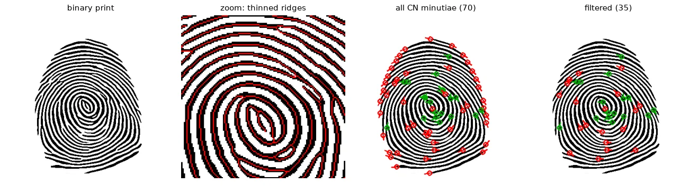
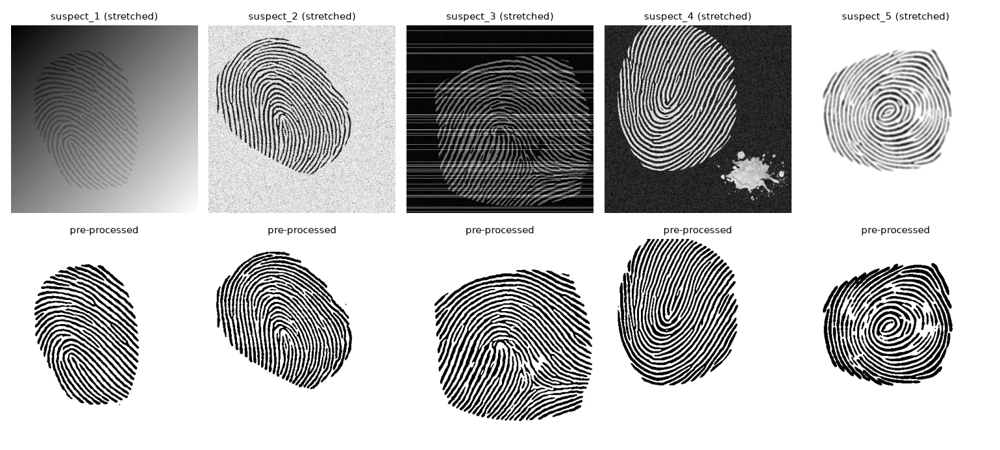
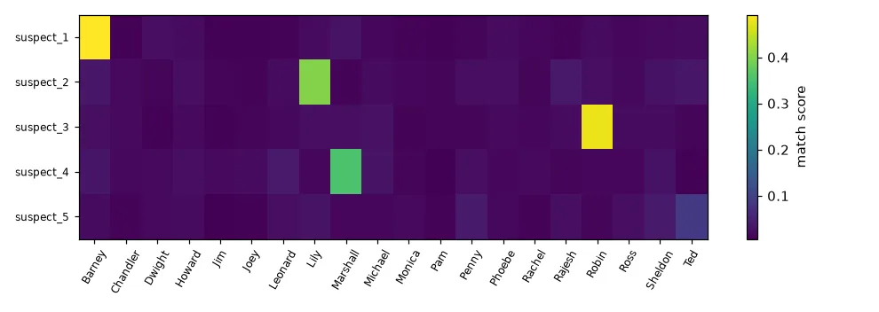
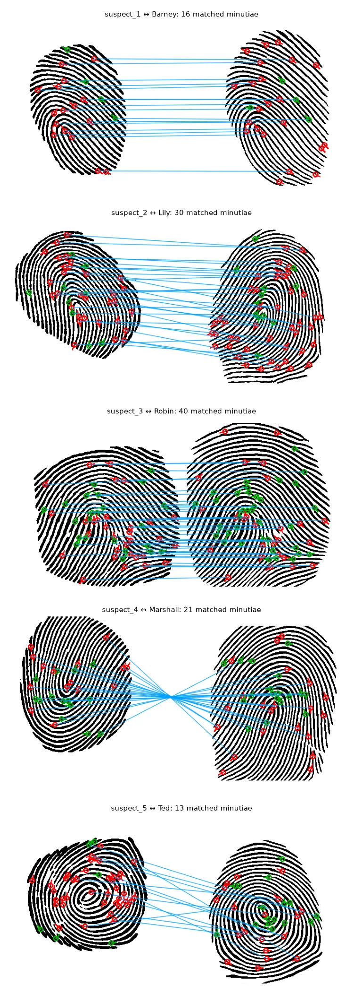

The case#
The lab's scenario: someone stole a blue French horn from a restaurant in Manhattan, and five fingerprints were collected at the scene. We have a "database" of 20 binarised prints and must say whose they are. The crime-scene prints were rotated, cropped — and degraded on purpose, each in a different way.
Fingerprints are compared not by pixels but by minutiae: the points where a ridge ends or splits in two (a bifurcation). Their positions and directions are stable across impressions and are what forensic systems store.
1. Thinning#
Minutiae are defined on ridge lines, so first reduce every ridge to a 1-pixel-wide skeleton that keeps its connectivity. Thinning is an iterated hit-or-miss (lesson 09) that peels pixels off the boundary as long as that does not break the line; skimage.morphology.thin implements it.
def skeleton(binary):
"""binary: uint8, ridges black (0) on white (255). Returns a bool 1-pixel-wide skeleton."""
return thin(binary == 0)
2. Finding minutiae: the crossing number#
Walk around the 8 neighbours \(P_1 \dots P_8\) of a skeleton pixel and count the transitions between 0 and 1:
\(CN = 1\): the ridge ends here. \(CN = 2\): an ordinary ridge pixel. \(CN = 3\): a bifurcation.
def neighbours(sk):
"""8 shifted copies of the skeleton, in RING order (zero padding at the border)."""
p = np.pad(sk, 1).astype(np.int8)
h, w = sk.shape
return [p[1 + dy:1 + dy + h, 1 + dx:1 + dx + w] for dy, dx in RING]
def crossing_number(sk):
"""CN = 1/2 * sum |P_i - P_(i+1)| around the pixel: 1 = ridge ending, 3 = bifurcation."""
n = neighbours(sk)
cn = sum(np.abs(n[i] - n[(i + 1) % 8]) for i in range(8)) // 2
return np.where(sk, cn, 0)
The lab also asked for the hit-or-miss version of ridge endings: eight \(3 \times 3\) kernels, one per position of the single neighbour.
def endings_hit_or_miss(sk):
"""Ridge endings as 8 hit-or-miss patterns: centre on, exactly one neighbour on."""
img = sk.astype(np.uint8) * 255
found = np.zeros(sk.shape, bool)
for dy, dx in RING:
k = -np.ones((3, 3), np.int32)
k[1, 1] = 1
k[1 + dy, 1 + dx] = 1
found |= cv2.morphologyEx(img, cv2.MORPH_HITMISS, k) > 0
return found
crossing number: 48 endings, 22 bifurcations; hit-or-miss endings: 48 (identical: True)
Both methods find exactly the same 48 endings. Bifurcations are where the crossing number really pays off: with hit-or-miss they need many kernels (T and Y shapes in all orientations), with \(CN\) it is one comparison.
3. Orientation#
Matching needs a direction for each minutia. Instead of looking only at the next pixel (which gives a direction rounded to 45°), we walk ten pixels along the ridge and take the direction of that segment. A bifurcation gets the direction of its "stem": the branch that points away from the other two.
def trace(sk, y, x, first, steps=10):
"""Walk along the skeleton from (y, x) through `first`; return the last pixel reached."""
prev, cur = (y, x), first
for _ in range(steps):
nxt = [(cur[0] + dy, cur[1] + dx) for dy, dx in RING
if 0 <= cur[0] + dy < sk.shape[0] and 0 <= cur[1] + dx < sk.shape[1]
and sk[cur[0] + dy, cur[1] + dx] and (cur[0] + dy, cur[1] + dx) not in (prev, (y, x))]
if len(nxt) != 1: # another minutia or the end of the ridge
break
prev, cur = cur, nxt[0]
return cur
def minutiae(sk):
"""N x 4 array (x, y, angle, type). Angle of an ending: direction from the ridge to its tip.
Angle of a bifurcation: direction of the branch opposite to the two closest ones."""
cn = crossing_number(sk)
out = []
for y, x in zip(*np.nonzero((cn == 1) | (cn == 3))):
branches = [(y + dy, x + dx) for dy, dx in RING
if 0 <= y + dy < sk.shape[0] and 0 <= x + dx < sk.shape[1] and sk[y + dy, x + dx]]
ends = [trace(sk, y, x, b) for b in branches]
angles = [np.arctan2(y - ey, x - ex) for ey, ex in ends] # pointing towards the minutia
if cn[y, x] == 1 and len(angles) == 1:
out.append((x, y, angles[0], ENDING))
elif cn[y, x] == 3 and len(angles) == 3:
# the "stem" is the branch whose direction differs most from the other two
d = [sum(abs(np.angle(np.exp(1j * (angles[i] - angles[j])))) for j in range(3)) for i in range(3)]
out.append((x, y, angles[int(np.argmax(d))], BIFURCATION))
return np.array(out, np.float64).reshape(-1, 4)
4. Throwing away false minutiae#
Many detected minutiae are artefacts: ridges that end because the capture area ends, small spurs created by thinning, ridges broken by noise. Two filters remove most of them:
- build the convex hull of the print, erode it, and keep only minutiae inside;
- drop minutiae that are closer than 8 px to another one (spurs and breaks come in pairs).
def print_mask(binary, erode_px=15):
"""Convex hull of the ridges, eroded: minutiae near the border of the capture are not reliable."""
contours, _ = cv2.findContours(255 - binary, cv2.RETR_EXTERNAL, cv2.CHAIN_APPROX_SIMPLE)
hull = cv2.convexHull(np.concatenate(contours))
mask = np.zeros_like(binary)
cv2.drawContours(mask, [hull], -1, 255, cv2.FILLED)
# erode as if outside the image were background (the default border mode replicates the edge)
return cv2.erode(mask, cv2.getStructuringElement(cv2.MORPH_ELLIPSE, (erode_px, erode_px)),
borderType=cv2.BORDER_CONSTANT, borderValue=0)
def clean_minutiae(m, mask, min_dist=8):
"""Drop minutiae outside the mask and pairs that are too close (spurs, broken ridges)."""
m = m[mask[m[:, 1].astype(int), m[:, 0].astype(int)] > 0]
d = np.linalg.norm(m[:, None, :2] - m[None, :, :2], axis=2)
np.fill_diagonal(d, np.inf)
return m[d.min(axis=1) >= min_dist]
def extract(binary):
sk = skeleton(binary)
return clean_minutiae(minutiae(sk), print_mask(binary)), sk

Borders and erosion
One crime-scene print touches the top of the image. cv2.erode replicates the border by default, so the hull mask was not eroded along that edge and a row of fake endings survived. Passing borderType=cv2.BORDER_CONSTANT, borderValue=0 treats outside the image as background.
5. Restoring the crime-scene prints#
The five prints are damaged differently: a lighting gradient (1), almost no contrast — all values between 96 and 104 (2), horizontal line noise (3), inverted polarity and an ink stain (4), faded and blurred patches (5). One pipeline handles all five, each step aimed at one problem:
def preprocess(img):
f = img.astype(np.float32)
f -= np.median(f, axis=1, keepdims=True) # 1. horizontal banding: remove row offsets
f -= cv2.GaussianBlur(f, (0, 0), 25) # 2. smooth illumination gradient
lo, hi = np.percentile(f, [1, 99])
if abs(hi) > abs(lo): # 3. polarity: ridges must be the dark side
f = -f
f = cv2.GaussianBlur(f, (0, 0), 1.2) # 4. light denoising
# 5. where is the print? ridges give a high local standard deviation
mean, sq = cv2.blur(f, (21, 21)), cv2.blur(f * f, (21, 21))
std = np.sqrt(np.maximum(sq - mean ** 2, 0))
region = (std > 0.2 * std.max()).astype(np.uint8)
region = cv2.morphologyEx(region, cv2.MORPH_OPEN, cv2.getStructuringElement(cv2.MORPH_ELLIPSE, (41, 41)))
n, labels, stats, _ = cv2.connectedComponentsWithStats(region)
region = labels == 1 + np.argmax(stats[1:, cv2.CC_STAT_AREA]) # the biggest blob: drops stains
# 6. binarise: a ridge pixel is darker than its neighbourhood (f was high-passed)
out = np.where((f < 0) & region, 0, 255).astype(np.uint8)
return cv2.morphologyEx(out, cv2.MORPH_CLOSE, np.ones((2, 2), np.uint8))
- Banding: subtracting each row's median removes line-wise offsets.
- Illumination: subtracting a very wide Gaussian blur is a high-pass filter; ridges become positive or negative oscillations around 0, whatever the original contrast was.
- Polarity: ridges are the thin structures, so they produce the extreme values; if the bright extreme is the larger one, the ridges are bright and we flip the sign.
- Region: ridges make the local standard deviation high; the largest blob of high variance, after an opening that cuts thin bridges, is the print — the stain is dropped.
- Binarisation: after the high-pass, "darker than its neighbourhood" is simply \(f < 0\), a local threshold.

6. Matching#
The prints are rotated and shifted with respect to the database, so we cannot compare coordinates directly. Alignment-based matching: every pair (ending \(a\) in print A, ending \(b\) in print B) proposes a rigid motion that takes \(a\) onto \(b\) (rotation = difference of their directions). Apply it to all of A and count the minutiae that land within 12 px of a minutia of B of the same type and with a direction within 30°. Keep the best motion. The score is \(n_\text{matched}^2 / (|A|\,|B|)\), the fraction of both sets that is explained.
def match_score(A, B, radius=12.0, angle_tol=np.deg2rad(30)):
"""Alignment-based matching. Every pair of ridge endings (a, b) proposes a rigid motion
(rotation + translation) taking a onto b; we keep the motion that makes the most minutiae
of A land on a minutia of B of the same type and similar direction."""
best, best_pairs = 0, []
ea, eb = A[A[:, 3] == ENDING], B[B[:, 3] == ENDING]
for a in ea:
dth = eb[:, 2] - a[2] # one rotation per candidate b
c, s = np.cos(dth), np.sin(dth)
ax, ay = A[:, 0] - a[0], A[:, 1] - a[1] # A centred on a
x = c[:, None] * ax - s[:, None] * ay + eb[:, 0:1] # (len(eb), len(A))
y = s[:, None] * ax + c[:, None] * ay + eb[:, 1:2]
th = A[None, :, 2] + dth[:, None]
dist = np.hypot(x[..., None] - B[:, 0], y[..., None] - B[:, 1]) # (eb, A, B)
dang = np.abs(np.angle(np.exp(1j * (th[..., None] - B[:, 2]))))
ok = (dist < radius) & (dang < angle_tol) & (A[None, :, None, 3] == B[:, 3])
counts = np.minimum(ok.any(axis=2).sum(axis=1), ok.any(axis=1).sum(axis=1))
k = int(np.argmax(counts))
if counts[k] > best:
best = int(counts[k])
best_pairs = [(i, int(np.argmax(ok[k, i]))) for i in range(len(A)) if ok[k, i].any()]
return best ** 2 / (len(A) * len(B)), best_pairs # fraction of both sets explained
The whole computation for one motion candidate is vectorised (an eb × A × B distance array), so comparing one print with the whole database of 20 takes a few seconds.
results = {}
for name, binary in prepared.items():
m, _ = extract(binary)
scores = {person: match_score(m, ref)[0] for person, ref in db_minutiae.items()}
ranking = sorted(scores, key=scores.get, reverse=True)
results[name] = (m, ranking, scores)
print(f"{name}: {len(m):3d} minutiae -> best {ranking[0]} ({scores[ranking[0]]:.3f}), "
f"then {ranking[1]} ({scores[ranking[1]]:.3f}), {ranking[2]} ({scores[ranking[2]]:.3f})")
suspect_1: 20 minutiae -> best Barney (0.492), then Marshall (0.032), Dwight (0.026)
suspect_2: 40 minutiae -> best Lily (0.402), then Rajesh (0.037), Ted (0.035)
suspect_3: 54 minutiae -> best Robin (0.478), then Michael (0.028), Lily (0.027)
suspect_4: 29 minutiae -> best Marshall (0.354), then Leonard (0.040), Barney (0.033)
suspect_5: 46 minutiae -> best Ted (0.089), then Sheldon (0.042), Penny (0.041)


Verdict: the five prints belong to Barney, Lily, Robin, Marshall and Ted — the five friends having dinner in the lieutenant's report. Fans of a certain sitcom will know which of them steals blue French horns.
Exercises#
- Make print 5 more convincing: estimate the ridge period of each print and rescale it to a common period before extracting minutiae. Does the margin improve? (In my test: 0.075 vs 0.023, but the other prints got slightly worse.)
- Use bifurcations as motion candidates too and compare the scores.
- Replace the score by the number of matched minutiae only. Why does the normalisation by \(|A|\,|B|\) matter when prints have very different numbers of minutiae?